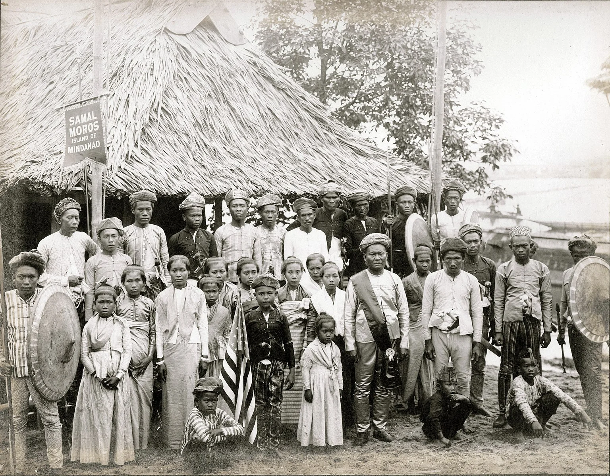
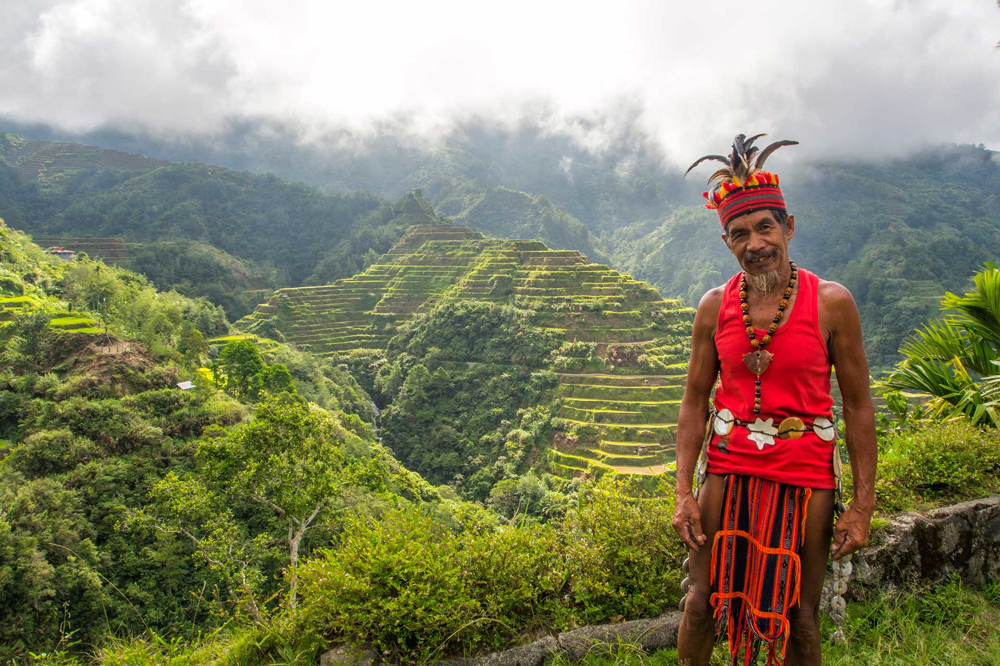
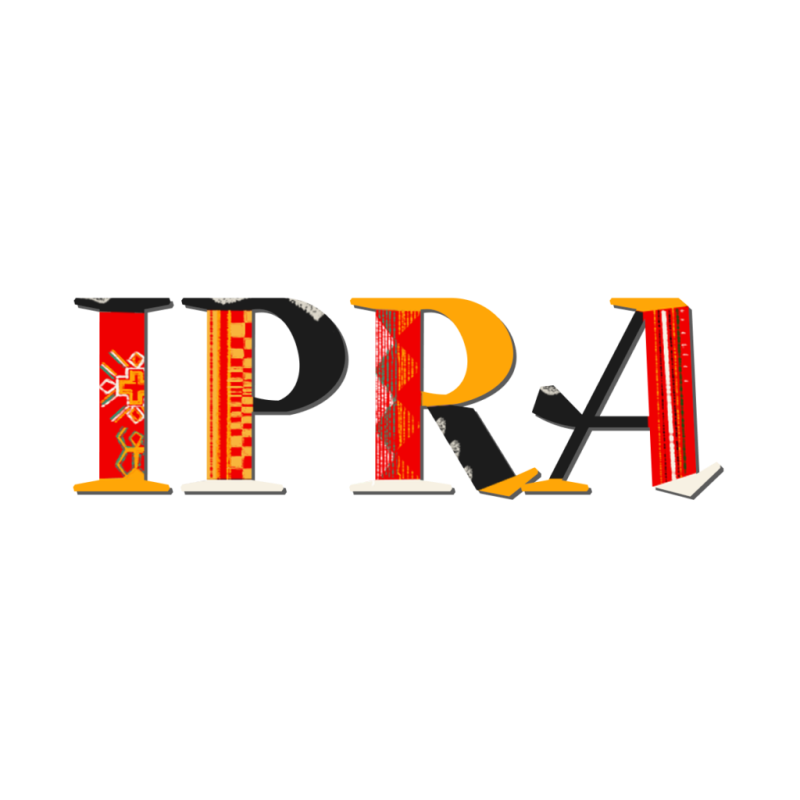
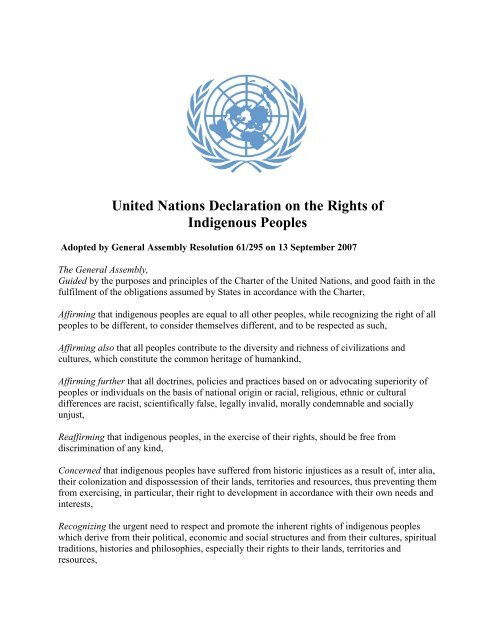

Indios (Christianized Lowlanders)
Indios was the colonial term used by the Spanish to classify the indigenous, Christianized populations of the Philippine lowlands...

Moros (Muslim Communities in the South)
The Moro people, or Bangsamoro, are a collective of 13 indigenous ethnolinguistic groups in the southern Philippines...

Infieles (Upland Indigenous Communities)
Infieles (meaning "infidels" or "unbelievers") was the collective term used by Spanish colonial authorities...
1987 Philippine Constitution
Article II, Section 22 mandates the State to recognize and promote the rights of Indigenous Cultural Communities, protecting ancestral lands and cultural traditions.

Indigenous Peoples’ Rights Act of 1997 (RA 8371)
IPRA recognizes ICCs/IPs as a distinct sector and guarantees rights to ancestral domains, self-governance, social justice, and cultural integrity.

UN Declaration on the Rights of Indigenous Peoples (2007)
UNDRIP establishes international standards recognizing Indigenous Peoples’ rights to self-determination, land ownership, and Free, Prior, and Informed Consent (FPIC).